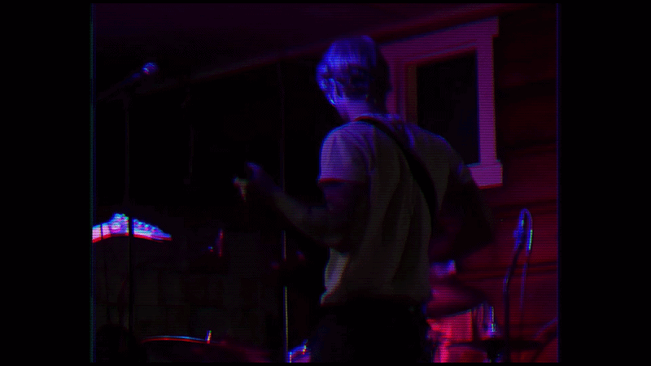
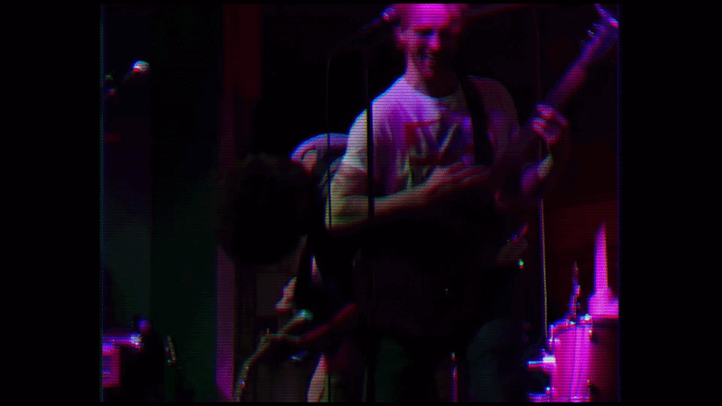
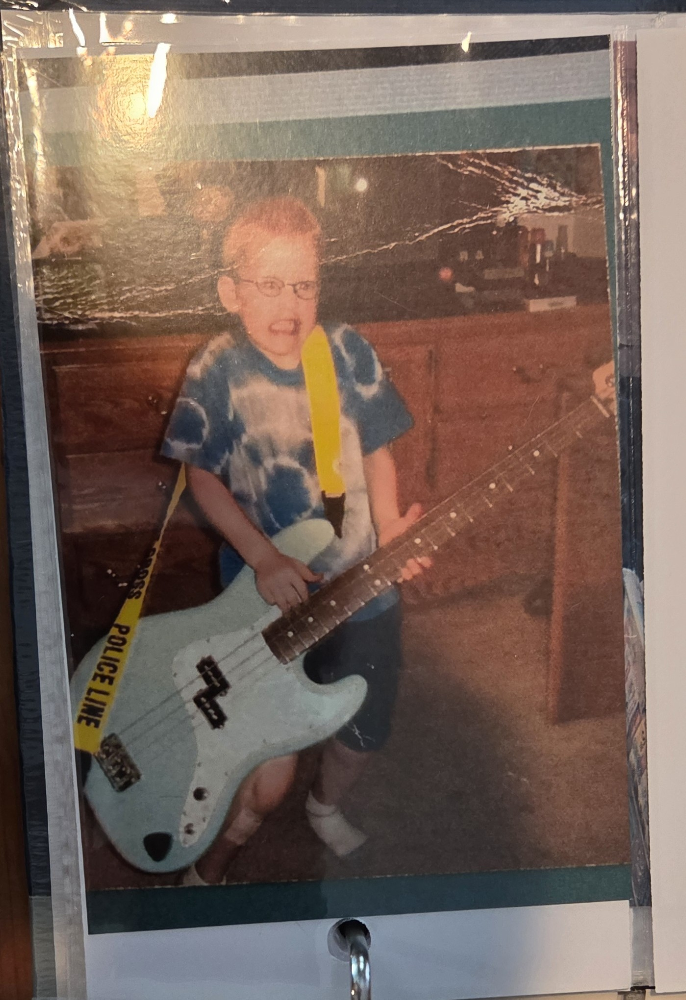
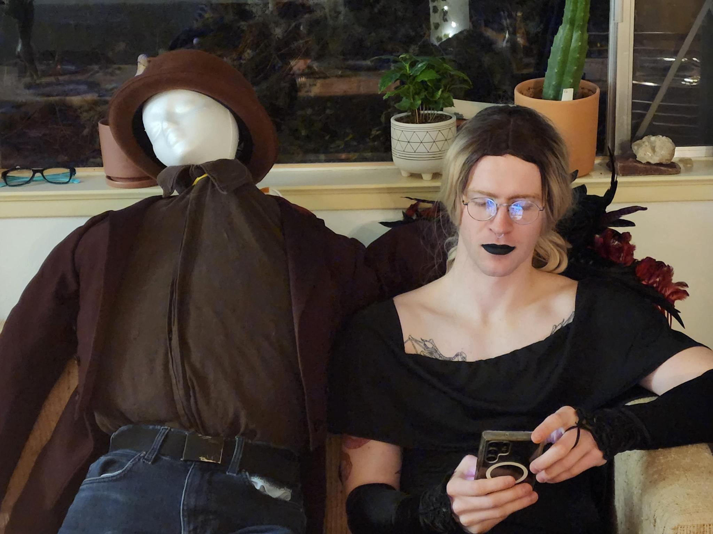

Guitarist • Vocalist • Songwriter • Hack • Fraud




Hello! Thanks for checking my page out. I'm hoping to connect with some other musicians in the Sacramento area. I'd love to join an existing band or start one from scratch, whatever opportunity comes my way.
A little about me, I'm mostly self taught but I've been taking lessons with the talented Josh Martin of the band Little Tybee, and the lessons have accelerated my playing considerably.
I'm inspired by countless genres, but I keep coming back to rock. I'm hoping to make some pop-rock that pulls influences from neo-psychedelic rock, progressive rock, electronica, and jazz fusion.
I was in the Grass Valley based band "Checked-Out" for a couple years before moving to Sacramento. I made some great connections with other Sac area bands, venues, and producers during this time. We played a LOT of shows, and I learned to continually improve my gigging system for easy setup/teardown.
I take my learning seriously, but I check my ego at the door. You'll find that I'm easy to work with, flexible, and a team player.
I'm a big advocate for establishing an online presence. I'm happy to help film and edit reels, videos, etc.. I'm familiar with the adobe image and video editing suite, and would love to make some more band posters, video assets, etc.
Here's a little tune I'm working on.
Anotha one.